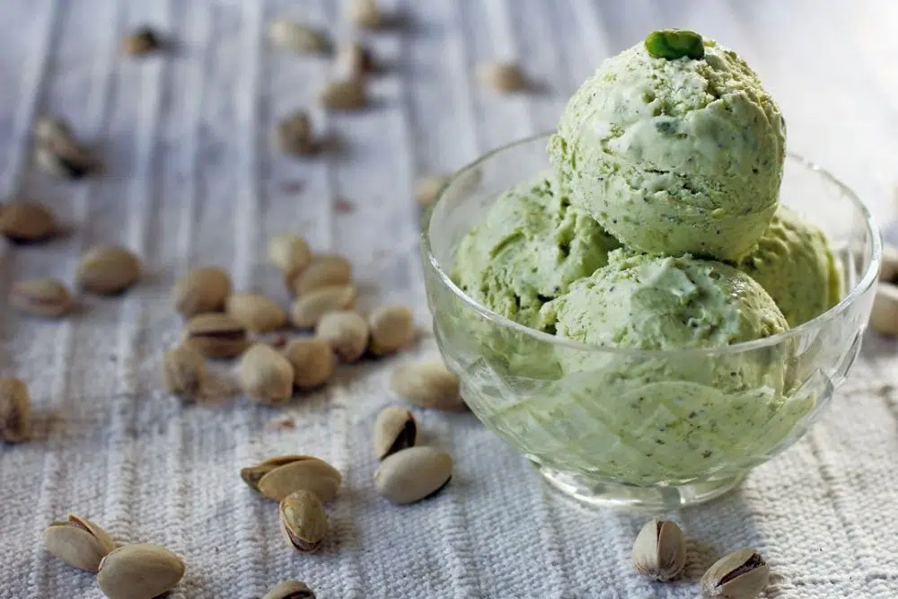

Gelato al Pistacchio

Home made italian gelato recipe
Pistachio gelato is one of the most popular flavors in Italy
Let's see how to make it
Ingredients
- Whole milk 690gr
- Sugar 140gr
- Peeled pistacchios 120gr
- Dextrose 25gr
- Dehydrated glucose syrup 25gr
- Locust bean flour 5gr
- Salt 2gr
Preparation
- In a saucepan add all the powders except the salt
- Add the milk
- With a high flame, bring the mixture to 70°C
- Pour into a blender glass, add the pistachios and blend at maximum speed for at least two minutes.
- The mixture will take on a green color, pour into a container for food and leave it in the refrigerator for at least 6 hours
- Turn on the ice cream maker and stir for 40-50 minutes
- When the gelato is almost ready add the salt
- The final texture will be relatively smooth but with a good presence of pistachios(depending on the power of the blender used) ENJOY!